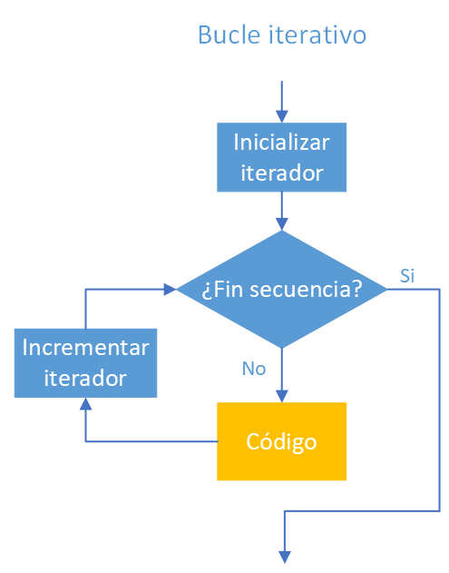
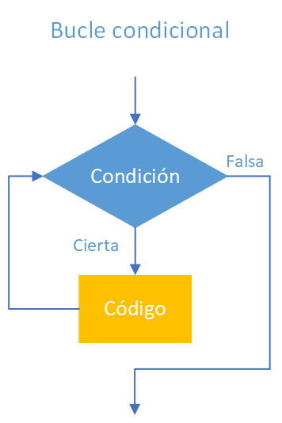

Introducción a los bucles en Python
Los bucles permiten repetir un conjunto de instrucciones varias veces.
En Python utilizaremos principalmente dos tipos:
for, cuando queremos recorrer una secuencia o repetir algo un número conocido de veces.while, cuando queremos repetir mientras se cumpla una condición.
En estos ejemplos también veremos:
range()- acumuladores
break- recorrido de cadenas de texto
1. Código completo
2. Bucle for básico
Un bucle for permite repetir instrucciones recorriendo una secuencia de valores.
El primer ejemplo es:
range(5) genera los valores:
En cada vuelta del bucle, la variable i toma uno de esos valores.
Por tanto, la salida será:
El valor final no se incluye
range(5) genera valores desde 0 hasta 4.
El 5 no forma parte del recorrido.
3. Indicar inicio y fin con range()
También podemos indicar dónde empieza y dónde termina el recorrido:
En este caso, range(10, 20) genera:
De nuevo, el límite final no se incluye.
3.1. El parámetro end de print()
Normalmente, print() termina con un salto de línea.
Por ejemplo:
produce:
Sin embargo:
hace que cada valor se muestre en la misma línea.
El argumento end indica qué debe escribirse después de cada print().
4. Utilizar un acumulador
El siguiente ejemplo suma todos los números comprendidos entre dos valores introducidos por el usuario:
suma = 0
ini = int(input("inicio: "))
fin = int(input("fin: "))
for i in range(ini, fin + 1):
print(i)
suma = suma + i
print("\nSuma:", suma)
La variable:
se utiliza como acumulador.
Un acumulador es una variable que va guardando un resultado parcial y se actualiza en cada vuelta del bucle.
En este caso:
significa:
- tomar el valor actual de
suma; - añadirle el valor de
i; - guardar el nuevo resultado otra vez en
suma.
4.1. Ejemplo
Si el usuario introduce:
el bucle recorrerá:
y el acumulador evolucionará así:
El resultado final será:
4.2. ¿Por qué aparece fin + 1?
El código utiliza:
porque range() no incluye el límite final.
Si queremos incluir el valor almacenado en fin, debemos utilizar fin + 1.
Forma abreviada
La instrucción:
también puede escribirse:
Ambas hacen lo mismo.
5. Bucle while
Un bucle while repite instrucciones mientras una condición sea verdadera.
El ejemplo es:
numero = int(input("Introduce un número (0 para terminar): "))
while numero != 0:
print("Has introducido:", numero)
numero = int(input("Introduce otro número (0 para terminar): "))
print("Fin del programa")
La condición es:
El bucle continuará mientras el usuario introduzca un valor distinto de cero.
Cuando introduzca:
la condición pasará a ser falsa y el programa saldrá del bucle.
Después se ejecutará:
6. Actualizar la condición del while
Hay un detalle especialmente importante:
Esta instrucción aparece dentro del bucle.
Gracias a ella, numero recibe un nuevo valor en cada iteración y la condición:
puede llegar a ser falsa.
Cuidado con los bucles infinitos
Si olvidásemos actualizar numero, la condición podría permanecer siempre verdadera y el bucle no terminaría.
Por ejemplo:
Este código imprimiría 5 continuamente.
7. while True y break
El siguiente ejemplo realiza prácticamente la misma tarea de otra forma:
while True:
numero = int(input("Introduce un número (0 para terminar): "))
if numero == 0:
break
print("Has introducido:", numero)
print("Fin del programa")
La condición:
es siempre verdadera.
Por tanto, en principio, este bucle no terminaría nunca.
Sin embargo, dentro aparece:
La instrucción break provoca la salida inmediata del bucle.
Cuando el usuario introduce 0, el programa abandona el while y continúa después de él.
7.1. Dos formas de resolver el mismo problema
Primera forma:
Segunda forma:
Ambas pueden ser válidas.
Para ejemplos sencillos, la primera suele expresar de forma muy clara la condición de repetición.
La segunda puede resultar útil cuando la condición para terminar aparece de forma natural dentro del bucle.
Usar break con criterio
break no es incorrecto, pero conviene utilizarlo cuando realmente mejora la claridad del programa.
Un exceso de salidas repartidas por un bucle puede hacer que el código sea más difícil de seguir.
8. Recorrer una cadena con for
Una cadena de texto puede recorrerse carácter a carácter.
Por ejemplo:
En cada iteración, x contiene uno de los caracteres de la cadena.
La salida comenzaría así:
Esta es normalmente la forma más sencilla de recorrer una cadena cuando solo necesitamos sus caracteres.
9. Recorrer una cadena utilizando índices
También podemos recorrer las posiciones de la cadena:
Aquí se combinan varias ideas.
9.1. len(nombre)
Obtiene la longitud de la cadena.
Si:
len(nombre) devuelve el número de caracteres que contiene.
9.2. range(len(nombre))
Genera todas las posiciones válidas:
9.3. nombre[i]
Permite obtener el carácter situado en la posición i.
Por tanto, el programa mostrará algo similar a:
10. ¿Cuándo usar cada forma?
Si solo queremos los caracteres:
suele ser la opción más sencilla.
Si necesitamos conocer también la posición de cada carácter:
podemos recorrer los índices.
Más adelante veremos que Python también ofrece otras formas cómodas de obtener simultáneamente posición y valor.
11. Enlaces y figuras
- https://www.w3schools.com/python/python_for_loops.asp
- https://www.w3schools.com/python/python_while_loops.asp

